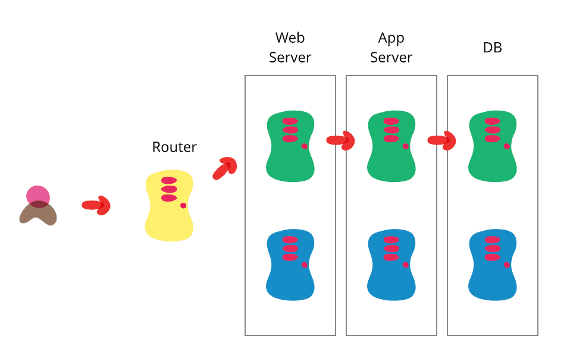
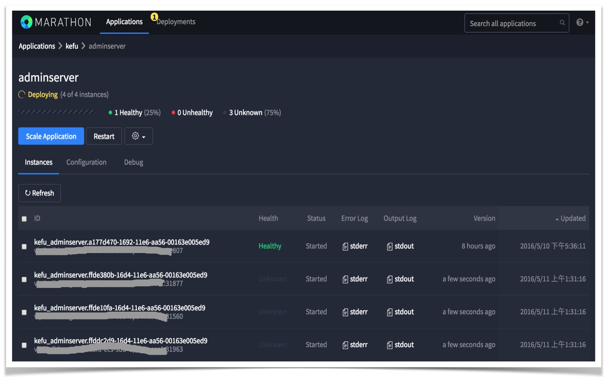

Blue Green Deployment
Blue-Green Deployment 示意图如下，摘自链接

灰度方案
目标
- 自动部署
- 平稳升级
- 快速回滚
A/B Cluster
两套完全相同的集群，相同是指基础架构完全一致，功能可以不一致。
集群状态
R: RED. 集群不再对外服务，流量已经完全切走，可以随时停止。Y: YELLOW. 集群处于灰度状态中，待发布。G: GREEN. 当前正在提供正常服务。
灰度策略
白名单
"route-strategy": A: status: Y id: all: false # 为true时，所有id。为false，则看`ids`, `interval`配置 ids: [1, 2, 3] interval:[[1,100], [600,10000]] B: status: G id: all: truerouter / load balancer
- 定期获取白名单，比如定期1秒等，为了方便称之为
router.interval。 - 根据请求，判定走哪一个cluster。
- 从服务注册中心获取所有服务信息，更新cluster upstream。
路由优先级:
Y > G。R状态下，不会有任何流量。同状态下随机路由。以上可以支持多版本灰度，比如增加
C，设置C.status:Y，再设置灰度策略。
- 定期获取白名单，比如定期1秒等，为了方便称之为
升级流程 - 灰度
- 首先确定当前集群状态。假设现在正在运行的集群为
A，其状态为G；则集群B状态为R。B为待发布版本。 - 启动
B中待升级的服务，规模与A相同。 - 设置
B.id.all:false，其他清空B.id.ids, B.id.internal，确保流量不会到B。 - 修改
B.status为Y，作为灰度版本。 - 修改灰度白名单
B.id.ids, B.id.internal，部分导流到B。进行线上回归测试。 - 测试完成，进行全量升级。
- 将
B.id.all改为true，等待一段时间router.interval。 - 测试...并观察
A流量是否完全切走。
- 将
- A/B状态切换，注意顺序
- 测试完成后，将
A.status改为R。停止A对外提供服务。 - 将
B.status改为G，升级完成，正式提供服务。 - 将
A停止，但不要销毁，即A启动所需的所有配置和脚本都不要删除修改，用于回滚。
- 测试完成后，将
升级流程 - 集群切换
- 一样的地方
- 首先确定当前集群状态。假设现在正在运行的集群为
A，其状态为G；则集群B状态为R。B为待发布版本。 - 启动
B中待升级的服务，规模与A相同。 - 设置
B.id.all:false，其他清空B.id.ids, B.id.internal，确保流量不会到B。 - 修改
B.status为Y，作为灰度版本。
- 首先确定当前集群状态。假设现在正在运行的集群为
- 不一样
- A/B状态切换。直接进行，不再经过灰度阶段。
- 测试完成后，将
A.status改为R。停止A对外提供服务。 - 将
B.status改为G，升级完成，正式提供服务。 - 将
A停止，但不要销毁，即A启动所需的所有配置和脚本都不要删除修改，用于回滚。
- 测试完成后，将
- A/B状态切换。直接进行，不再经过灰度阶段。
升级流程 - 逐个更新
- 一样的地方
- 首先确定当前集群状态。假设现在正在运行的集群为
A，其状态为G；则集群B状态为R。B为待发布版本。
- 首先确定当前集群状态。假设现在正在运行的集群为
- 不一样
- 设置
B.status:G,B.id.all:true - 启动
B中待升级的服务，实例数为1。 - 停掉
A中的一个实例。 - 重复执行以上2步，
B中实例数逐个增加到A中原先实例数，A中实例数最终变为0。 - 设置
A.status:R，停止A。
- 设置
回滚流程
回滚操作等同于一次升级，经过上面的升级流程后，B变为了线上运行的版本，状态为G，需要回滚到A，此时状态为R。
- 启动
A中服务，检查所有健康检测。 - 待健康检测成功后，设置
A.id.all:true，再设置A.status改为Y。 - 检查确认流量全部进入
A，同时B无流量。 - A/B状态切换
- 设置
B.status:R，停止B对外提供服务。 - 设置
A.status:G，回滚完成，正式提供服务。 - 将
B停止。
- 设置
TODO
灰度管理平台
- 集群状态管理(增删改查)
- 灰度策略修改
- 升级任务及操作记录
服务注册中心
- consul
- 服务支持注册/发现
Router/LB(nginx)
- 支持从注册中心拉取服务列表(nginx-upsync, consul-template)
- 灰度策略及路由策略实现
- 配置管理及版本控制
- 配置更新机制: 手动 -> 自动
部署工具
- 程序包管理
- java: nexus
- docker: docker-registry
- mesos
- 分布式系统内核
- HA: zookeeper
- 资源管理: mesos-master, mesos-slave。每台宿主机需要部署一个mesos-slave。
- 进程级监控，自动拉起
- 实时log
- marathon. 自动部署。
- auto-deployment
- auto-scaling
- 健康检测
- management api，实现自动化的必要条件
- 脚本版本控制。
配置中心
- 变更可追踪
- 静态配置: ConfigServer
- 整理分类
- 运行时配置
监控
- 机器级别
- cpu/ram/disk
- process/fd/load/io/network
- 服务级别
- health: AdminServer, nginx, consul
- metrics
- config
日志
- 服务日志规范化
- 每个请求必须输出一条日志，包括请求参数(如organId/tenantId/userId，以及其他此请求必须具备的参数)，处理结果成功与否，总的相应时间以及重要步骤的处理时间。
- 日志收集及统一
Marathon Auto-Scaling, add 3 instances
